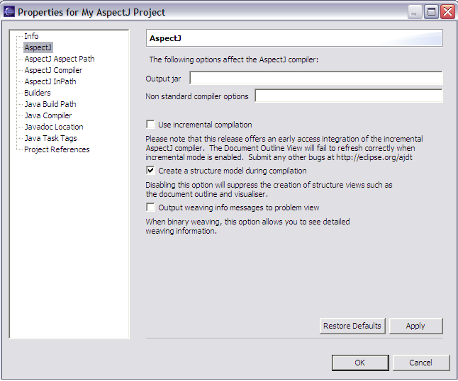

Copyright © 2004 Eclipse.org.
All Rights Reserved
Incremental
compilation can be specified on a global or per-project basis. To switch all
projects into incremental compilation mode:
Click
'Window' > 'Preferences', expand the 'AspectJ' node and select 'Compiler'.
Click on the 'Other' tab and then check the "Use incremental compilation" checkbox.

To switch
an individual project in or out of incremental mode, right click on the project, then select
'AspectJ Compiler'. Click on the 'Other' tab and then check or uncheck the "Use incremental compilation" checkbox.